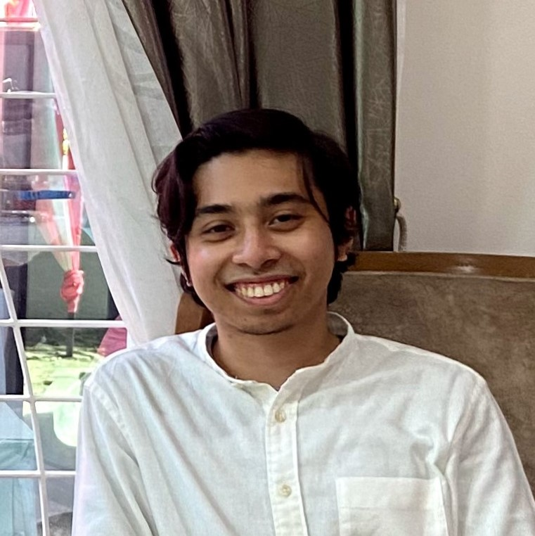

Cloud Engineer with experience in SRE, DevOps, SysOps, FinOps, and SecOps on AWS, Azure, and GCP. A curious,
fast learner skilled in critical thinking. Can adapt to work independently as well as to communicate
efficiently in a team setting.
- Experience
-
Standard CharteredKuala Lumpur, MY | Apr 2022 - Present
Junior Cloud Engineer, Cloud Site Reliability Engineering
- Inspired and won highest peasant death competition among servants
- Helped coordinate managers to grow cult following
- Provided untimely deaths to all who opposed
Maxis CommunicationsKuala Lumpur, MY | Jul 2021 - Oct 2021
Intern, Cloud Operations and Innovations
- Worked on grass-roots promotional campaigns
- Reduced theft and property damage percentages
- Contributed in FinOps activites such as
Telekom MalaysiaSelangor, MY | Jul 2019 - Sept 2019
Intern, Network Development & Network Management
- Contributed to planning and developing of fibre optics by designing and mapping out the layout
at exchange side (E-side) and distribution side (D-side) to provide optimal network delivery.
- Installed and spliced fibre optics at distribution points to effectively provide network
services for clients.
- Performed troubleshooting near distribution points and clients’ homes using tools such as a
light source power meter (LSPM) to rapidly fix any networking issues at the client side.
TeachingSelangor, MY | Jul 2019 - Sept 2019
Tutor, Private Classes
- Taught PT3 and SPM students science-based subjects by creatively incorporating various
activities and approaches to ensure a healthy learning environment.
- Customized and adjusted lesson plans based on the students’ respective learning methods to
optimize overall study progress.
- Education
-
International Islamic University MalaysiaSelangor, MY | 2017 - 2021
Bachelors in Telecommunication Engineering
CGPA: 3.71, First-Class Honours
Centre for Foundation Studies, IIUMSelangor, MY | 2017 - 2021
Foundation in Engineering and Computer Science
CGPA: 3.96, First-Class Honours
- Skills
-
Cloud Computing
Amazon Web Services (AWS), Azure, Google Cloud Platform (GCP), Terraform, CloudGuard Dome9, VMWare
CloudHealth
Information Technology
Agile (Scrum), Linux (RHEL, CentOS, Ubuntu), GitHub, Docker, Kubernetes, Spring Boot, React, CI/CD
Pipeline, RESTful API, Postman, pgAdmin
Programming Languages
JavaScript, Java, Python, MATLAB, C++, C, HTML, CSS, SQL
- Projects
-
This Resume
- Hosted a full-stack
- Reduced theft and property damage percentages
- AWS URL
- Azure URL
Multi-Platform SmartBank Application
- Hosted a full-stack
- Reduced theft and property damage percentages
- AWS URL
- Azure URL
Cyber Security Algorithm for Multi-Server Medical Environment
- Hosted a full-stack
- Reduced theft and property damage percentages
- Janitorial work, Laundry
Speech Controlled Snake Coding Game with Machine Learning
- Hosted a full-stack
- Reduced theft and property damage percentages
- Janitorial work, Laundry
- Personal Skills
- Fast learner, good communicator, critical thinker, good teamwork, independent, flexible, punctual,
analytical, innovative, curious, passionate, enthusiastic, confident, competitive
- Hobbies
- Playing music (Guitar, Piano, etc)